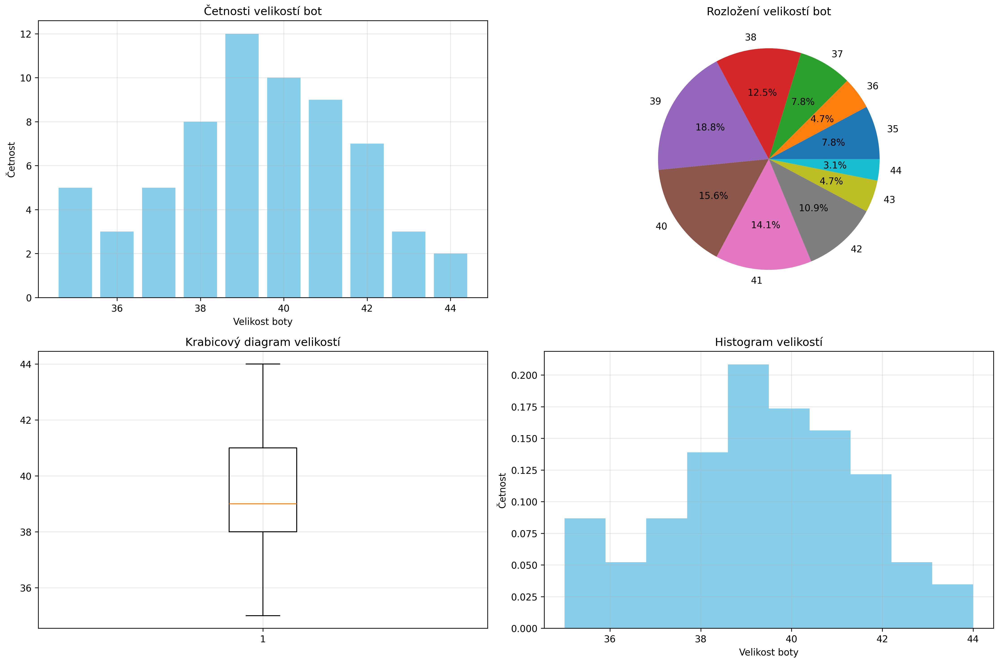

Statistická analýza velikostí bot
1. Základní charakteristiky
| Charakteristika | Hodnota |
|---|
| Aritmetický průměr | 39.375 |
| Modus | 39 |
| Medián | 39 |
| Rozptyl | 5.203 |
| Směrodatná odchylka | 2.281 |
| Variační koeficient | 5.79% |
2. Grafy

3. Tabulka četností
| Velikost boty |
Absolutní četnost |
Relativní četnost |
Relativní četnost (%) |
| 35 |
5 |
0.078 |
7.8% |
| 36 |
3 |
0.047 |
4.7% |
| 37 |
5 |
0.078 |
7.8% |
| 38 |
8 |
0.125 |
12.5% |
| 39 |
12 |
0.188 |
18.8% |
| 40 |
10 |
0.156 |
15.6% |
| 41 |
9 |
0.141 |
14.1% |
| 42 |
7 |
0.109 |
10.9% |
| 43 |
3 |
0.047 |
4.7% |
| 44 |
2 |
0.031 |
3.1% |
4. Závěry
- Nejčastější velikost bot je 39
- Průměrná velikost bot je 39.375
- 50% hodnot leží pod velikostí 39
- Rozptyl velikostí je 5.203, což indikuje variabilitu dat
- Směrodatná odchylka 2.281 ukazuje průměrnou odchylku od průměru
- Variační koeficient 5.79% značí relativní variabilitu souboru